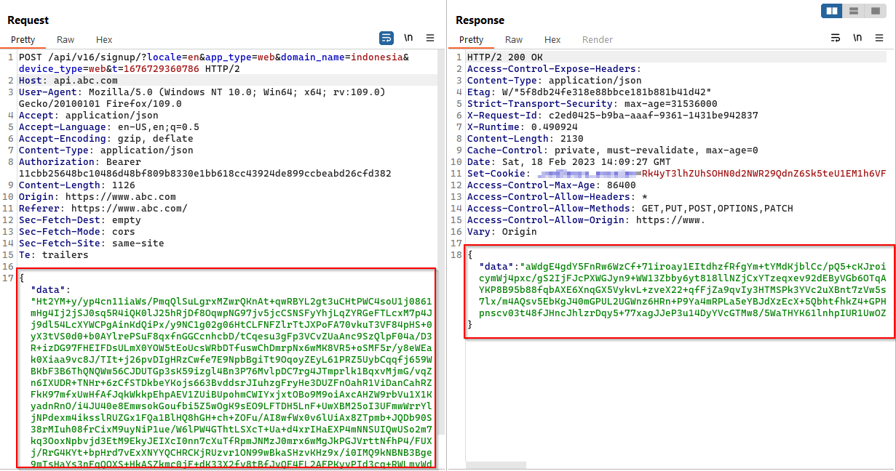
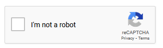
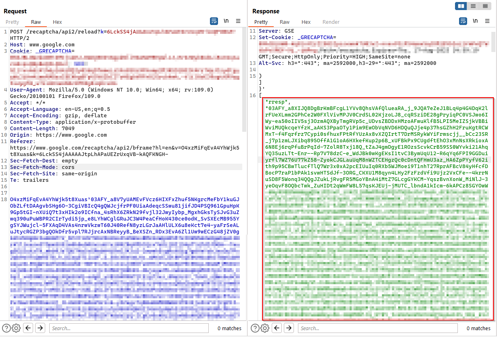
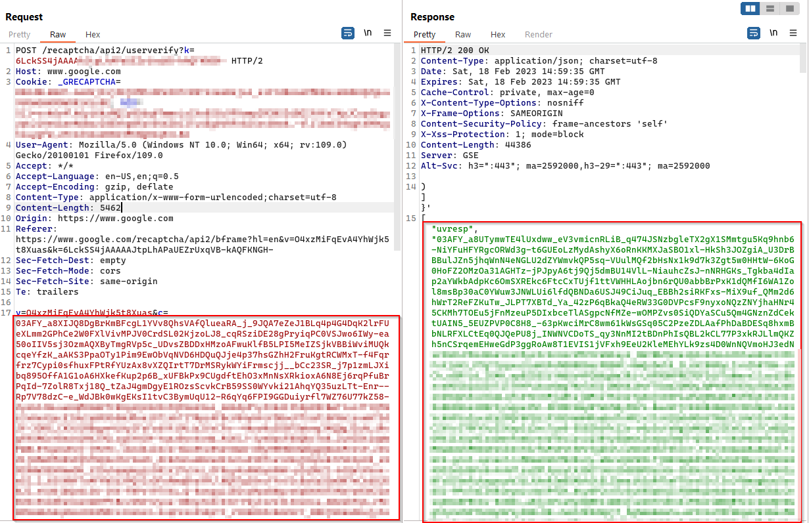

When every API body looks like noise in Burp, junior testers close the tab. Senior ones open the JS. This note is the methodology side of a multi-app property that “encrypted all REST traffic” with AES keys sitting in the CDN bundle — and how that unlock turned registration automation into a practical problem once reCAPTCHA token handling was in the loop.
A separate writeup covers the membership payment logic on the same crypto pattern. Here the focus is reverse engineering and what you can do once cleartext is free.
Target shape
Web plus Android/iOS clients, React on the browser side, API host distinct from the marketing host, Amazon CDN in front of static assets. Subdomain enumeration put the org past fifteen properties sharing stack fingerprints — same CDN patterns, same client crypto smell.
Shared CDN config is a gift during RE: one key often opens several apps.
Encrypted means “decryptable by customers”
Traffic capture showed opaque request/response bodies. That is not end-to-end security against the user of the SPA. The browser must encrypt; therefore the browser must hold the algorithm and key material (or fetch it in a way you can still intercept).
Bundles worth reading on this target included
booking.js, desktop.js, home.js,
search.js, signin.js, signup.js,
main.js. Grep is underrated:
encrypt, enc, iv, CryptoJS,
createCipheriv, dataHasKey.
main.js spilled the environment block:
91622: function (e, t) {
'use strict';
t.Z = {
apiDomain: 'https://api.abc.com',
bookingApiDomain: 'https://bookings.abc.com',
cdnPath: 'https://cdn.abc.com',
dataHasKey: '###################=',
dataIVKey: 'jm8lgqa3j1d0ajus',
encryptionKeys: '[...]'
}
}
Factory code on the CDN implemented the actual transform — AES-CBC, PKCS7, static IV next to the key:
abc.factory('EncryptDecrypt', [
'AppSettings',
function () {
return {
encryptKEY:
'UiQ1TmNyeXBUITBuJDVDUmV0KEBRJH0=',
encrypt: function (t) {
var e = this.encryptKEY,
n = 'jm8lgqa3j1d0ajus',
r = JSON.stringify(t);
return CryptoJS.AES.encrypt(
r,
CryptoJS.enc.Utf8.parse(e),
{
iv: CryptoJS.enc.Utf8.parse(n),
padding: CryptoJS.pad.Pkcs7,
mode: CryptoJS.mode.CBC
}
).toString()
}
}
}
])
Observed framing (across related apps): ciphertext, delimiter,
IV encoding — roughly
AES_output + "---" + Base64(IV). Once you implement
encrypt/decrypt offline, every “protected” body is ordinary JSON:
{
"first_name": "test",
"email": "test@example.com",
"password": "Pass@123",
"source": "LoginActivity"
}From here, testing is normal API work with an extra codec step. Static IV also means identical plaintexts produce related ciphertexts — secondary issue, but it says how carefully the crypto was designed (not very).
If the threat model includes “malicious user of our own web app,” client-side AES is not a control. It is an encoding.
Where CAPTCHA still mattered
Registration used Google reCAPTCHA. Encryption does not stop bots by itself; CAPTCHA was the actual gate on account creation.

Flow in practice:
- Challenge / widget interaction
- Verification call
- Short-lived token issued for the app
- Token + PII packed into JSON, encrypted, POSTed
Tokens expired quickly — fine. Token minting and reuse patterns were less fine. Verification responses were scriptable; rate and binding checks were not tight enough to stop a loop that harvested tokens and fed them into encrypted signup bodies.
HTTP/1.1 200 OK
["uvresp",null,null,null,2]
Get CAPTCHA code
→
Verify CAPTCHA
→
Obtain final CAPTCHA token
→
Encrypt crafted JSON body
→
Send automated registration request
Result: mass registration capability against an API that looked hostile in the proxy and “bot-protected” in the product deck.
Impact
- Full visibility and mutability of API JSON for anyone who loads the SPA
- Automated account creation at scale (spam, fake inventory, loyalty farming, credential stuffing setup)
- Easier abuse of any endpoint that relied on obscurity of the encrypted schema
- Cross-app risk where the same CDN secrets are reused
This is often scored as a combination finding: insecure crypto design + broken anti-automation, not a single CVE-shaped hole. Programs still care when fake accounts and API abuse are in scope.
Root cause
- Long-lived symmetric keys and IVs distributed to every client.
- API trust model that assumed ciphertext implied integrity or secrecy against the client.
- CAPTCHA integrated as a UX step rather than a tightly bound, single-use server-side gate on registration.
- Shared CDN config expanding blast radius across apps.
What I want engineering to change
- Drop client-held API body encryption as a security feature. Use TLS; authorize on the server.
- If field encryption is a compliance theater requirement, use per-session keys from a hardened channel and still never trust client JSON for authorization or pricing.
- Bind CAPTCHA tokens to IP/session, single-use, short TTL, verified server-side before any user row is written.
- Split secrets per app; stop shipping a global
AppSettingsblob with every property’s keys.
Method, short form
- Map hosts and CDN JS.
- Search bundles for crypto primitives and config modules.
- Reimplement encrypt/decrypt; diff against live traffic until byte-compatible.
- Document plaintext schema.
- Re-test business logic and anti-abuse as if the API had never been “encrypted.”
That last step is the point. RE is not the finding. RE is how you get back to finding.